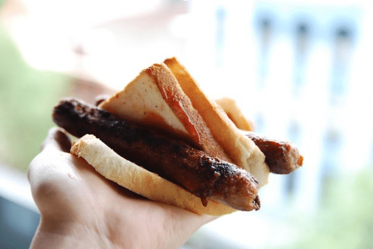

Snags

Description
Snags, are sausages (beef, pork, or chicken) served in sliced bread or a hot dog bun with grilled onions and various condiments, most commonly tomato sauce, barbecue sauce or mustard.
Australian hardware chain 'Bunnings' offers barbecue facilities at all of its stores for hire to community groups. Sausage sizzles at these locations usually occur on weekends and have become associated with the Bunnings brand.
Ingredients
- loaf of sliced bread
- 10 sausages (beef, chicken or pork)
- sauce (tomato, mustard)
- 3 whole onions
Steps
- Heat large frying pan on medium heat. Once hot, place sausages on pan and cook each side, turning every 3 to 5 minutes. Whilst sausages are cooking, slice onions thinly.
- Remove sausages from pan. Place onions onto pan, cook until brown.
- Place sausage on slice of bread, top with onions and sauces of choice.
- Enjoy :)
Home